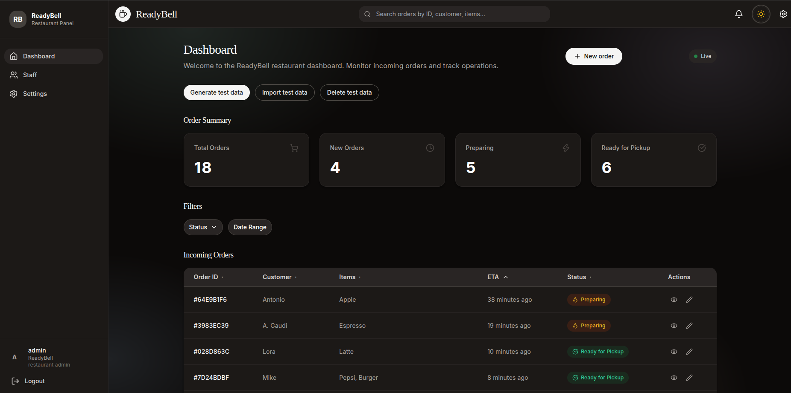

ReadyBell GitHub ↗
Multi-tenant SaaS · Java 21 · Spring Boot 3.4
Problem. Restaurant customers wait without knowing when an order is ready. A QR code on the receipt opens a PWA that tracks the order and sends a Web Push when it is ready: no app, no account.
- DDD with hexagonal architecture as a modular monolith; six bounded contexts
- Tenant isolation enforced in the query layer with a Hibernate
@Filter - Order state machine with optimistic locking; live updates over SSE with polling fallback